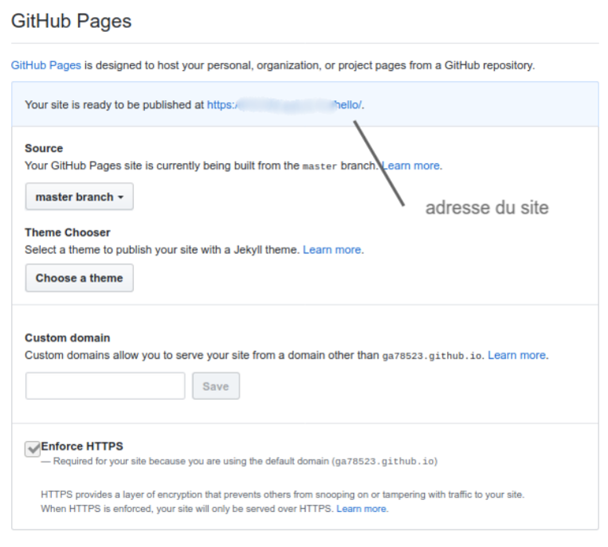
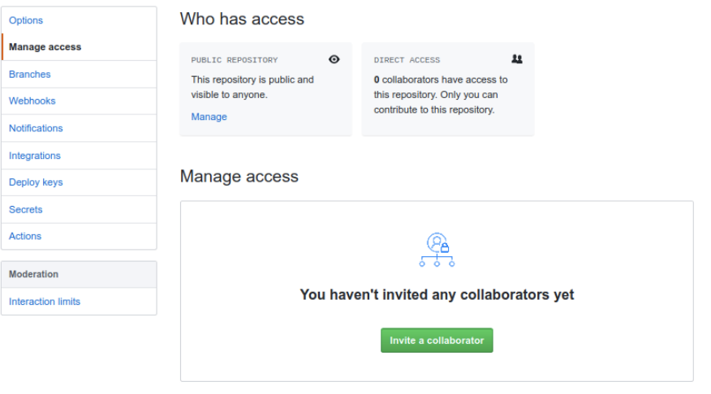

Les outils git et github#
Introduction (wikipedia)#
Git est un logiciel de gestion de versions décentralisé. C’est un logiciel libre créé par Linus Torvalds, auteur du noyau Linux, et distribué selon les termes de la licence publique générale GNU version 2. En 2016, il s’agit du logiciel de gestion de versions le plus populaire.
GitHub exploité sous le nom de GitHub, Inc. est un service web d’hébergement et de gestion de développement de logiciels, utilisant le logiciel de gestion de versions Git. Ce site est développé en Ruby on Rails et Erlang par Chris Wanstrath, PJ Hyett et Tom Preston-Werner. GitHub propose des comptes professionnels payants, ainsi que des comptes gratuits pour les projets de logiciels libres. Le site assure également un contrôle d’accès et des fonctionnalités destinées à la collaboration comme le suivi des bugs, les demandes de fonctionnalités, la gestion de tâches et un wiki pour chaque projet. En avril 2016, GitHub a annoncé avoir dépassé les 14 millions d’utilisateurs et plus de 35 millions de dépôts de projets le plaçant comme le plus grand hébergeur de code source au monde.
Les deux modèles des logiciels de gestion de version : modèle centralisé vs modèle décentralisé#
Les logiciels de gestion de version sont aujourd’hui tous construits sur l’un des deux modèles suivants : le modèle centralisé ou le modèle décentralisé encore appelé modèle distribué.
Le principe de base d’un modèle centralisé est la centralisation du code source lié au projet : la source du code du projet est hébergé sur un serveur distant central et les différents utilisateurs doivent se connecter à ce serveur pour travailler sur ce code.
Dans un modèle distribué, le principe de base est opposé : le code source du projet est toujours hébergé sur un serveur distant mais chaque utilisateur est invité à télécharger et à héberger l’intégralité du code source du projet sur sa propre machine.
Le modèle distribué a été popularisé par Git et présente différents avantages notables par rapport au modèle centralisé :
- Simplicité / flexibilité du travail : Comme chaque utilisateur peut héberger le code du projet, on n’a plus besoin d’être constamment connecté à un serveur central et on peut donc travailler en ligne sur sa propre machine ;
- Sécurité : Comme chaque utilisateur possède le code complet d’un projet, on peut utiliser la copie du projet d’un utilisateur comme back-up en cas de corruption du serveur central
Sur votre ordinateur : git#
Téléchargement, installation et configuration#
- Se rendre sur le site : https://git-scm.com/downloads
- Télécharger le logiciel pour le système d’exploitation que vous avez ;
- Se rendre dans la console et taper :
git --versionpour vous assurer que cela a bien fonctionner.
Configurer git<>#
Utilisation#
- On crée un dossier. Par exemple : Hello ;
- Dans ce dossier, on crée la page
hello.htmlsuivante :
- On l’enregistre ;
- Avec la console, se rendre dans le dossier Hello en ligne de commande ;
- Dans le dossier Hello, taper :
git initpour commencer à versionner le projet ; - Pour faire une "photo" de votre projet à un instant t, il faut en faire un commit. Cela se déroule en deux étapes :
- Vérifier que tout est en ordre. Pour cela taper :
git add . - Faire la "photo". Taper :
git commit -m "Premier commit"pour "pousser" votre projet sur le serveur.
Exercice 1 :
Faire un modification du fichier hello.html puis en faire un commit.
Sur internet : GitHub#
Préalable#
- Se rendre sur github : https://github.com/ ;
- S’inscrire ;
Pour le projet Hello#
- Aller sur new repository ;
- Taper le nom :
Hello; - Github vous donne ensuite la démarche à suivre. Dans notre cas, il faut recopier les lignes suivantes dans la console pour indiquer à votre ordinateur le serveur git qui va recevoir votre projet ;
Pour obtenir l’hébergement de sa page html#
1 Une fois dans votre projet, se rendre sur settings.
2 Descendre, jusqu’à :

3 Cliquer dans source sur None et choisir Master.
4 Vous devriez obtenir un écran du type :

5 Au prochain "push", votre site sera visible à l’adresse indiquée.
Inviter des personnes#
- Dans votre projet, se rendre sur
settings; - Aller dans
manage accesset rentrer le nom de la personne. Vous devriez obtenir cette fenetre :

Les commandes git de bases (wikipedia)#
git init: crée un nouveau dépôt ;git clone: clone un dépôt distant ;git add: ajoute de nouveaux objets dans la base des objets pour chaque fichier modifié depuis le dernier commit. Les objets précédents restent inchangés ;git commit: intègre la somme de contrôle SHA*1 d’un objet tree et les sommes de contrôle des objets commits parents pour créer un nouvel objet commit ;git branch: liste les branches ;git merge: fusionne une branche dans une autre ; git rebase déplace les commits de la branche courante devant les nouveaux commits d’une autre branche ;git log: affiche la liste des commits effectués sur une branche ;git push: publie les nouvelles révisions sur le remote. (La commande prend différents paramètres) ;git pull: récupère les dernières modifications distantes du projet (depuis le Remote) et les fusionne dans la branche courante ;git stash: stocke de côté un état non commité afin d’effectuer d’autres tâches
Les commandes Unix utiles#
A titre d’information, les commandes (UNIX) de base à connaitre sont les suivantes :
- La commande
pwdaffiche le nom et chemin du répertoire courant. Elle permet de savoir où on se situe sur notre machine ; - La commande
lsaffiche la liste des fichiers et répertories dans un répertoire ; - La commande
cdpermet de changer de répertoire, c’est-à-dire de se déplacer d’un répertoire à un autre ; - La commande
mkdirpermet de créer un nouveau répertoire (ou “dossier”) ; - La commande
touchpermet de créer un fichier ; La commandemvpermet de renommer ou de déplacer des fichiers.